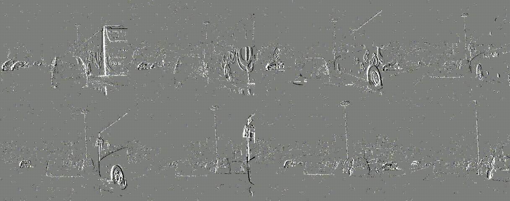
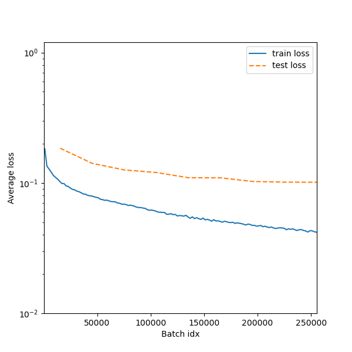

Note
Проект находится в активной разработке
SODa (Spike Object Detector)#
Импульсная нейросеть для детекции объектов дорожной обстановки с использованием событийной камеры.
Применяются открытые библиотеки PyTorch и norse. Поддерживаются датасеты GEN1 и 1Mpx.
Документация: kirillhit.github.io/snn_for_object_detection
Запуск#
Предварительно установите расширение git lfs.
Скачайте репозиторий:
git clone https://github.com/KirillHit/snn_for_object_detection.git --recurse-submodules
cd snn_for_object_detection
Создайте виртуальное окружение с помощью conda:
conda env create -f environment.yml
conda activate soda_env
Перед запуском необходимо скачать один из наборов данных Gen1 или 1Mpx, создать в директории проекта папку data, и перенести в нее данные в соответствии с шаблоном /data/<"gen1" или "1mpx">/<"*_bbox.npy" и "*_td.dat">
Для запуска доступно несколько сценариев. Выбор сценария, изменение размера пачки и настройка других параметров обучения осуществляется в файле конфигурации. Для тестов следует выбрать интерактивное обучение.
Далее запустите сценарий:
python3 main.py
Предварительные результаты#
В данный момент проводятся эксперименты с различными архитектурами и методами обучения. Этот пример относиться к сети версии 0.4.1. Сеть основана на архитектуре YOLOv8 и имеет 3M параметров.

Для обучения использовались пачки из 5 примеров длительностью в 32 кадра. Временной шаг между кадрами составляет 16 мс, что примерно соответствует 60 fps. Удалось достигнуть точности 22.8 mAP@0.5. График обучения сети:

Генерация моделей#
Для ускорения прототипирования была реализована система генерации моделей, которая позволяет быстро проектировать и тестировать разные архитектуры и модули.
Пример описания простой сверточной сети в коде:
def vgg_block(out_channels: int, kernel: int = 3):
return Conv(out_channels, kernel), Norm(), LIF()
cfgs: ListGen = [
*vgg_block(8), Pool("S"), *vgg_block(32), Pool("S"), *vgg_block(64), Pool("S")
]
Подробнее о генераторе моделей смотри здесь.
Содержание